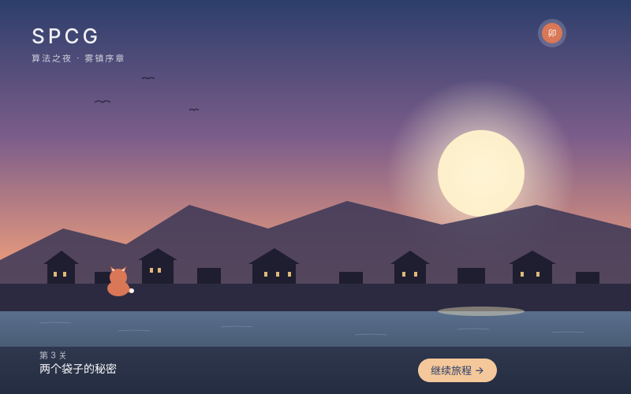
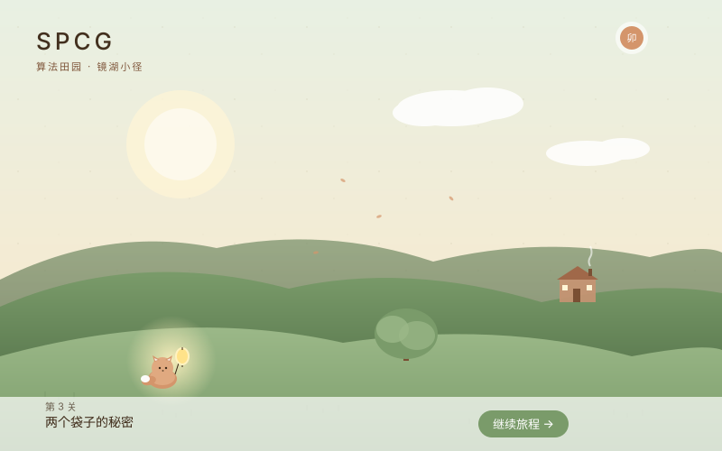
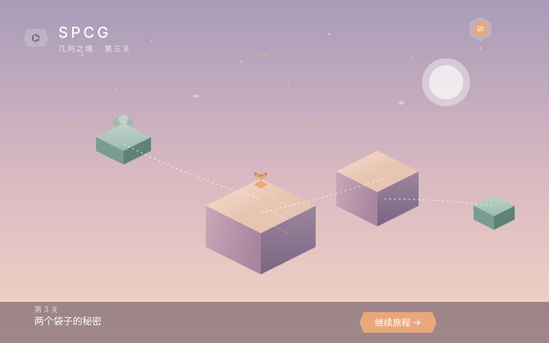

SPCG 主界面风格对比 · v0.1
三种差异明显的方向 mockup。请重点感受
色调、构图、情绪
，不要看 SVG 的细节质感。

方向 A
新海诚 · 黄昏雾镇
色调
冷暖反差强
情绪
诗意感伤
识别度
★★★★★
耐看度
★★★
优点
：戏剧性强、容易出爆款 KV、辨识度高
风险
：饱和度偏高、长时间使用可能情绪疲劳

方向 B
推荐
吉卜力 · 晨雾村落
色调
暖中带绿
情绪
温暖踏实
识别度
★★★★
耐看度
★★★★★
优点
：色彩压力最小、最适合长时间陪伴、家长接受度高、与算法的安静气质契合
风险
：美术功力不到位时容易看起来普通

方向 C
纪念碑谷 · 几何之境
色调
冷淡通透
情绪
冷静思考
识别度
★★★★
耐看度
★★★★
优点
：与"算法 = 抽象结构"内核最匹配、最不过时、高级关卡可视化天然契合
风险
：缺少角色温度、10 岁左右孩子可能觉得冷